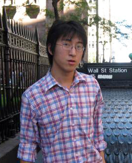

Group People

Xiang Bai
Professor
Director, HUST MC Lab Computer Vision Group
Department of Electrical Information and Communications Department, HUST
Office Room NE502, N1 Hall, Luoyu Rd 1037, Wuhan, 430074, China
Phone 12345678901
Email xbai@hust.edu.cn
Personal Homepage http://mc.eistar.net/~xbai/
Xinggang Wang
Associate Professor
Department of Electrical Information and Communications Department, HUST
Office Room NE502, N1 Hall, Luoyu Rd 1037, Wuhan, 430074, China
Phone 12345678901
Email xgwang@hust.edu.cn
Personal Homepage http://mc.eistar.net/~xwang/

Xin Yang
Associate Professor
Department of Electrical Information and Communications Department, HUST
Office Room NE502, N1 Hall, Luoyu Rd 1037, Wuhan, 430074, China
Phone 12345678901
Email xinyang@umail.ucsb.edu